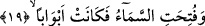

Yukarda zikrettiğimiz hadis-i şerifi Sa’lebi gibi bâzı müfessirler tefsir kitaplarında
zikretmekte olup hadisin sıhhatini her iki taraf da kabul etmektedir. Şu halde İbn
Hacer’in hadisin “uydurma olduğu açıktır” şeklindeki kanâatine itibar olunamaz. Bu
kanâat, meselenin içyüzünü bilmemekten kaynaklanmaktadır. Zira kıyâmet günü,
Allah’ın “gizlenenlerin ortaya döküldüğü gün “ (et-Tarık, 86/9) âyetinde haber
verdiği üzere bütün sıfatların ortaya serileceği ve döküleceği gündür. Kuşkusuz her
sıfatın kendisine uygun güzel veya çirkin bir biçimi olacaktır. Gerçeğin bu olduğunu aklı
başında hiçbir kimse inkâr etmemektedir. Diyelim ki bu hadis-i şerifin lafzı uydurmadır.
Buna ragmen mânâsı sahihtir ve bu mânâ başka sahih haberlerin mânâsıyla
desteklenmektedir.
Şu halde ey mümin! Sen taş gibi katı kalpli olma. Kalbinden feyiz nehirleri fışkıran,
hikmet pınarları akan kişilerden ol. Hakkında “bir şeyler öğrenmişsin, ama bir sürü şeyi
gözden kaçırmışsın” denilen kimselerden olmamak için çok çaba sarfet. Allah Teâlâ’nın
muhlis ve samîmî kulları içinde bir kitap vâsıtasıyla olmaksızın ve ona dayanmadan sırf
Allah’tan ilim alan kimseler vardır. Bu gerçek kıyâmete kadar böyle devam edip
gidecektir. Ancak böylesi bir gerçek üzerine ayağını basabilen kimseler çok azdır. Bu
nedenle inkâr çoğalmış, insanlar gerçeği farketmeksizin ve işin içyüzünü anlamaksızın
zâhirî durumlar üzerine balıklama atılmışlardır.
Bizler Allah’tan kendimizi mârifet ehlinden kılmasını dileriz.
19. Gökyüzü açılır ve orada pek çok kapılar oluşur;
Hiçbir çatlak yok iken “gökyüzü” Allah’ın heybetinden açılır. Buradaki “gökyüzü
açılır” ifâdesi, yukardaki “sura üfürülür” ifâdesi üzerine atfedilmiştir. Dikkat edileceği
üzere bu âyette “açılır” şeklinde tercüme ettiğimiz fiil aslında “futihat/açıldı”
biçimindedir. Bir başka ifâdeyle bu fiil “di-li geçmiş zaman” kipindedir. Bu kipin
seçilmesi, göğün açılmasının kesinliğini vurgulamak içindir. Bir başka ifâdeyle burada
denmiş oluyor ki: “Bir zamanlar içinde hiçbir çatlak yok iken gök, Allah Teâlâ’nın
heybetinden çatlar ve yarılır.”
“Ve” meleklerin hiç alışık olunmayan biçimde inmeleri için “orada pek çok kapı
oluşur.” Kapılar anlamına gelen “ebvâben” kelimesinin başında “zâtu” edâtı vardır.
Bunlar dikkate alındığında âyete şöyle mânâ vermek mümkündür: “Gökyüzü meleklerin
şimdiye kadar hiç bilinmeyen bir biçimde inmeleri için bir çok kapıya ayrılmış hâle
gelir.” Bu âyette anlatılmak istenen, Furkan sûresinde vurgulanan mânânın aynısıdır.
Nitekim Allah orada şöyle buyuruyor: “O gün gökyüzü beyaz bulutlar ile yarılacak ve
melekler bölük bölük indirileceklerdir.” (el-Furkan, 25/25) Bu âyetteki
“gamâm/bulutlar” kelimesi, “onlar ille de buluttan gölgeler içinde Allah’ın ve